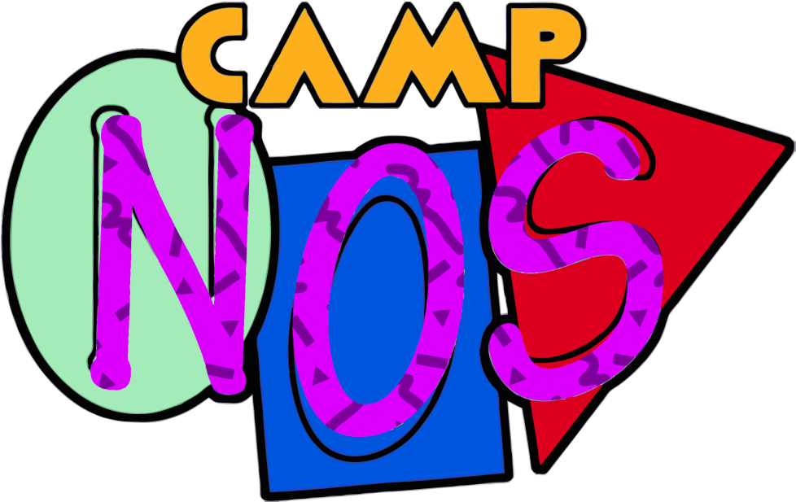

Leeroy Green
A Producer and DJ from Jersey City. Inspired by The Neptunes, 9th Wonder, and J Dilla, he got
his
start
around the scene playing beat sets around NJ and collaborating with local artist while
developing
his
sound. Leeroy beganbCamp Nos with fellow member Dylan as a beat making duo which slowly evolved
into
a
collective. Currently he's on his way to release his first collaboration album Roses.
Murdock
Murdock is a Jersey City rapper and theatre artist. He graduated from Montclair State University
with a degree in theatre studies and has spent his time since then creating art around his
hometown.
He’s released 3 hip-hop albums to local acclaim along with sold-out record release shows. He
also
specializes in throwing local events to highlight his city’s music and arts scene. His past
events
include a series of Hip-Hop shows called The Mixtape and the local music and arts festival Arts
on
the Hudson Fest which raised funds for local non-profit organization Arts on the Hudson. He’s
excited to be a part of the Camp Nos collective and help spread even more local art and
programming
to the world.